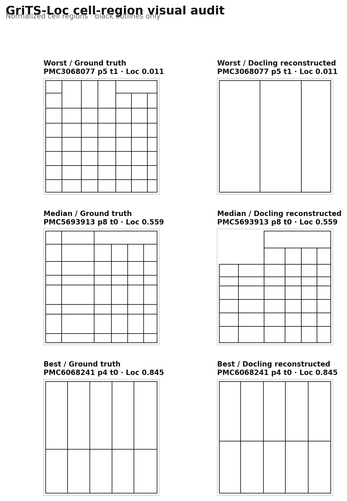

인접 문맥으로 candidate Recall 92.78%, MRR 0.536까지 개선됐습니다. 기준은 완화하지 않고 development 탐색을 종료했으며 Routing은 계속 잠급니다.
Capability-aware selective document processing
과학 논문 PDF를 언제 빠르게, 언제 강하게 처리할 것인가
Cheap 문서 처리와 Strong 문서 처리의 품질·비용 차이를 먼저 증명한 뒤, 필요한 문서만 Strong으로 보내는 연구입니다. P1에서 현재 파서 조합의 절감 상한이 목표에 미달해, 라우터 학습 대신 파서 조합을 개선하는 단계입니다.
Oracle 최대 절감률9.86%사전 목표 15% · FAIL
Cheap 충분11.43%28 / 245 pages
Strong 필요50.20%123 / 245 pages
둘 다 실패38.37%94 / 245 pages
P0 results
Cheap와 Strong의 실제 차이
동일 문서·동일 페이지 기준입니다. latency는 cache miss 상태의 parser 실행 시간을 사용했습니다.
| 평가 항목 | Cheap · PyMuPDF | Strong · Docling | 해석 |
|---|---|---|---|
| p50 latency | 91.64 ms | 667.22 ms | Strong 7.28배 느림 |
| p95 latency | 212.10 ms | 1,921.27 ms | 긴 꼬리에서 9.06배 차이 |
| Table-count F1 proxy | 0.280 | 0.976 | 표 존재·개수 감지의 예비 지표 |
| Row/column shape | 0.225 | 0.964 | 245페이지의 행·열 형태 진단 |
| GriTS-Top | 0.190 | 0.904 | 병합 셀을 포함한 topology 품질 |
| GriTS-Loc | 0.114 | 0.528 | Strong cell-region 재구성 후 |
| CUDA allocation | 0 | 603–628 MB | Strong만 GPU 사용 |
| 완주 | 300 / 300 | 300 / 300 | Strong은 배치 복구 후 집계 |
검은 막대는 품질(1.0 기준), 빗금 막대는 latency(Strong p50 기준)를 각각 정규화했습니다. 서로 다른 단위의 막대 길이를 직접 비교하지 않습니다.
Research gates
현재 어디까지 왔는가
Gate가 통과되지 않으면 다음 단계로 넘어가지 않는 보수적 실험 순서입니다.
P0-A · COMPLETEHarness & Cost
Canonical IR, cache, latency, VRAM, power, 300-page 실행 완료.
P0-B · COMPLETEOfficial Quality
Top/Loc 및 시각 audit 완료. Content는 후속 보완.
P1 · FAIL / REPAIRCapability / Oracle
Oracle 절감 9.86%. 파서 조합 개선 후 재검증.
R0 · PASSQASPER Evidence Audit
100 usable, exact paragraph mapping 93.68%.
R1 · COMPLETERetrieval Baselines
Dense R@5 54.14%; RRF 49.78%.
R1.1 · ACTIVERetrieval Repair
Failure stratification과 candidate re-ranking.
Reality check
좋은 신호와 아직 불안한 부분
연구를 계속할 이유
- 비용 차이가 충분히 큼p50 7.28×, p95 9.06× — 선택으로 아낄 공간이 존재.
- 공식 topology 품질 차이가 뚜렷함GriTS-Top에서 Strong 0.904, Cheap 0.190.
- 재실행 비용이 통제됨모든 parser output을 cache하여 평가 코드만 반복 가능.
과장하면 안 되는 부분
- Cheap coverage가 너무 낮음28/245만 통과하여 완벽한 router도 9.86%만 절감.
- 구조 대응은 245/30055페이지는 structure XML 대응이 없어 shape 진단에서 제외.
- both-fail 비율이 높음94/245는 Strong으로 보내도 고정 품질 기준을 통과하지 못함.
P1 oracle result
완벽한 라우터도 왜 목표를 못 넘는가
라우팅 판단 비용이 0이라고 가정한 이론적 상한입니다.
| 분류 | 페이지 | 비율 | 의미 |
|---|---|---|---|
| Cheap 통과 전체 | 28 / 245 | 11.43% | Cheap으로 처리해도 고정 품질 기준 충족 |
| Strong 필요 | 123 / 245 | 50.20% | Cheap은 실패하지만 Strong은 통과 |
| 둘 다 실패 | 94 / 245 | 38.37% | 라우팅이 아니라 파서 품질을 먼저 개선해야 함 |
| Strong 역전 실패 | 8 / 245 | 3.27% | Cheap은 통과하지만 Strong은 실패; Cheap 통과 28에 포함 |
| Oracle 절감 | — | 9.86% | 목표 15% 미달; P1 Gate FAIL |
상호배타 label의 both-pass는 20페이지이며, Cheap 통과 전체 28페이지에는 Strong 역전 실패 8페이지가 포함됩니다.
P1 frozen rule
어떤 페이지를 Cheap으로 충분하다고 보는가
Oracle 결과를 보기 전에 고정한 기준입니다. 결과에 맞춰 임계값을 바꾸지 않습니다.
| 조건 | 기준 | 이유 |
|---|---|---|
| 표 개수 | 정답과 정확히 일치 | 표를 하나라도 놓치거나 과검출하면 불충분 |
| 평균 GriTS-Top | ≥ 0.80 | 행·열 및 병합 구조를 보수적으로 유지 |
| 평균 GriTS-Loc | ≥ 0.50 | 셀 영역 위치가 최소 절반 수준 이상 일치 |
Visual audit
점수가 실제 구조 차이를 반영하는가
최악·중앙·최고 GriTS-Loc 사례에서 정답 셀과 Docling 재구성 셀을 비교했습니다.

최악 0.011은 행 구조가 소실된 실제 실패이고, 최고 0.845는 대부분의 셀 경계가 일치합니다. 검은색 외곽선만 사용했습니다.
Experiment log
무슨 일이 있었는가
실패와 protocol 차이를 포함한 요약 로그입니다.
R1.3 FAILAdjacent rescue candidate R 92.78%, R@5 61.61% FAIL, nDCG@5 0.5103 PASS. 개발 탐색 종료.
SPLIT FREEZEPaper-disjoint calibration 62/200, certification 60/200, final 123/443 고정. 숫자는 papers/questions.
R1.2 FAILSection passage R@5 55.62%, R@10 75.56%, nDCG@5 0.4484. 개선됐지만 동결 Gate 미달.
VARIANT DROPTitle query + section passage는 R@5 33.26%로 악화. 폐기하고 추가 조합 탐색을 1회로 제한.
RERANK FAILCandidate Recall 77.05%였지만 MiniLM top-5 Recall 51.90%, nDCG@5 0.4296. Section-aware 표현 수리로 이동.
R1.1 AUDITDense hit@5 58/97. BM25-only 11, dense-only 18, 둘 다 miss 28. 복수 증거와 긴 논문에서 하락.
R1 DENSEBGE dense Recall@5 54.14%, nDCG@5 0.3846. RTX 3090에서 97문항/34논문 3.44초.
HYBRID FAIL단순 RRF Recall@5 49.78%로 dense보다 하락. top-10 후보 합집합 상한은 77.05%; 재순위화 전 routing 보류.
R1 BM2597문항: Recall@1/5/10 16.90%/43.68%/56.65%, MRR 0.3645, nDCG@5 0.3238. Dense 비교 전 routing 보류.
R0 PASSQASPER 100/100 usable, 텍스트 증거 163/174 exact mapping(93.68%). R1 Oracle·BM25 허용.
LIMIT동결 100문항의 evidence type은 paragraph 100, 표·그림 0. 현재 결과는 text-control이며 multimodal 주장이 아님.
RAG R0QASPER 100-question evidence audit → retrieval baseline → SPIQA multimodal 순서와 Gate 고정.
DISKSPIQA 전체 약 33.6GB는 현재 약 10GB 여유에 부적합. metadata/subset 우선 전략 채택.
300 FAILTATR 300/300: Top 0.866 PASS, Loc 0.494 near-miss FAIL, p50 135.79ms PASS.
PIVOTLoc 기준을 사후 완화하지 않고 P2 잠금. downstream query-time page/table rescue protocol로 전환.
TATR PASS16 evaluable pages: span-aware Top 0.894, Loc 0.510, p50 127.67ms. 300-page 단계 해제.
CORRECTION초기 계산은 XML 미대응 4페이지를 0점 포함. P1 계약대로 not-evaluable 분리 후 재평가.
STRUCT FAILTATR 20 pages: Top 0.671, Loc 0.392, exact-count 80%. 고정 품질 Gate 미달.
SPEED PASS렌더링 포함 p50 129.76ms, p95 179.73ms, peak VRAM 약 409MB. 300-page 확대는 보류.
TATR PASSDetection 20/20, table-count proxy 1.000, model-only p50 17.36ms, peak VRAM 약 230MB.
SCOPEDetection 결과는 구조 품질 결론이 아님. 다음 structure 20-page GriTS 및 end-to-end latency 필요.
PREFLIGHT STOPpdfplumber 20/20 완주, p50 95.97ms이나 table-count proxy 0.183으로 300-page 확대 중단.
WARNINGPDF color operator 경고 4회 관측, page failure는 0건. 품질 중단 사유와 분리 기록.
REPAIR FAILPyMuPDF 3종 모두 15% Gate 미달: union/refine 9.17%, text 0%, raw-lines 9.81%.
ANOMALYtext 전략은 table-count proxy 0.931이지만 구조 충분 페이지 0개. 개수 proxy와 GriTS 품질의 괴리 확인.
P1 FAIL고정 기준 Oracle 절감 9.86%로 목표 15% 미달. P2 잠금, parser pair repair로 전환.
ORACLE245 pages: Cheap 통과 11.43%, Strong 필요 50.20%, both-fail 38.37%.
GATEP0 topology/location screening PASS. P1 Capability / Oracle 단계 해제.
AUDITWorst 0.011, median 0.559, best 0.845가 실제 구조 실패·부분 일치·높은 일치와 대응.
FIXDocling cell-region 재구성 후 GriTS-Loc 0.204 → 0.528, Top 0.904 유지.
GRITS245 pages / 291 tables: Top Cheap 0.190, Strong 0.904. Loc bbox 의미 불일치 발견.
VALIDATE병합 셀 합성 표에서 Microsoft 공식 코드와 GriTS Top/Loc 0.75로 일치.
MEASURE구조 메타데이터 포함 Cheap 300-page 재측정 완료 — p50 91.75ms.
DATAPubTables validation structure XML 94,959개 확보 — 약 0.72GB.
RECOVERYStrong 300/300 집계 완료. 25–50 page 독립 배치로 native crash 영향 격리.
ANOMALYPMC6067716 page 7 단독 native exit 재현. 제외 목록과 Decision Log에 기록.
PREFLIGHT20-page 실험에서 Cheap/Strong 모두 완주. Strong 구조 감지 우세 확인.
Plain language
헷갈리기 쉬운 용어
Cheap / Strong processing
Cheap은 PyMuPDF처럼 빠르고 가벼운 처리를, Strong은 Docling처럼 표 구조를 더 정교하게 분석하지만 더 오래 걸리는 처리를 뜻합니다. 모델 크기가 아니라 실제 capability와 비용으로 구분합니다.
Capability-aware routing
모든 PDF에 비싼 처리를 쓰지 않고, Cheap으로도 충분한 문서는 Cheap에 두며 어려운 문서만 Strong으로 보내는 선택 전략입니다.
GriTS
표 셀의 topology, 위치, 텍스트 내용을 grid 정렬로 비교하는 공식 구조 평가입니다. Top은 병합 구조, Loc은 셀 영역, Con은 셀 텍스트를 평가합니다.
P1 Gate가 실패한 이유
Cheap이 Strong보다 7.28배 빠르지만 품질 기준을 통과한 페이지가 11.43%뿐이어서, 완벽하고 무료인 라우터도 9.86%만 절감합니다. 목표 15% 전에는 P2를 시작하지 않습니다.